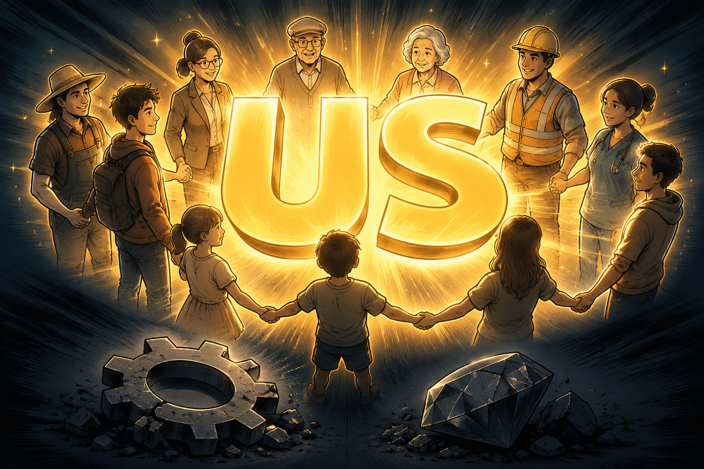
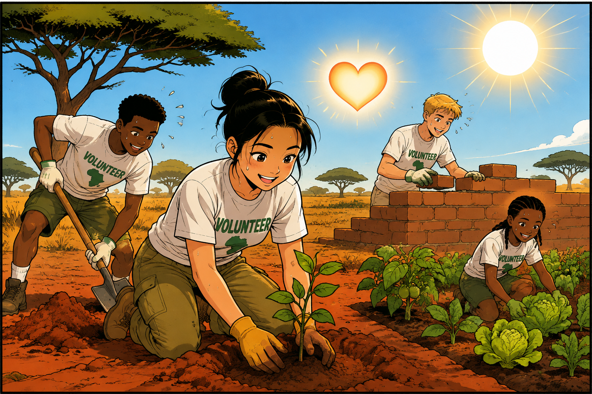
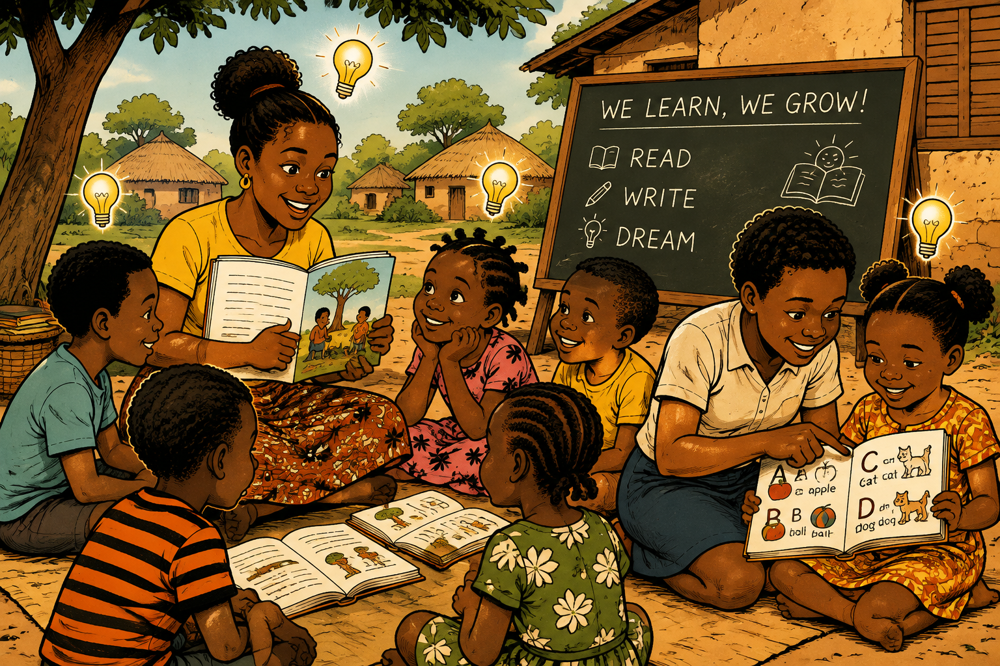
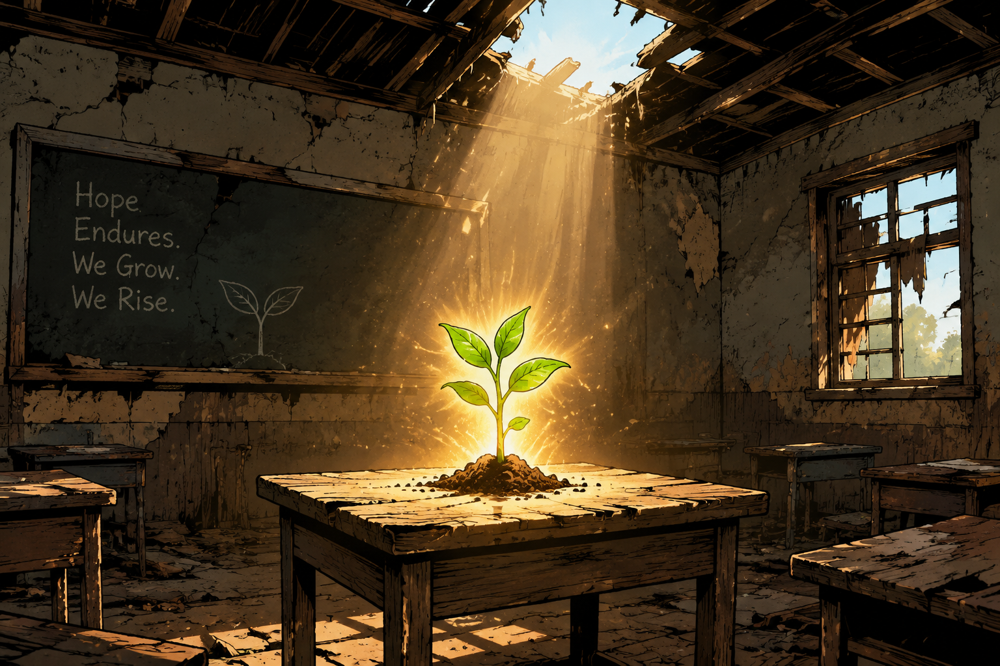
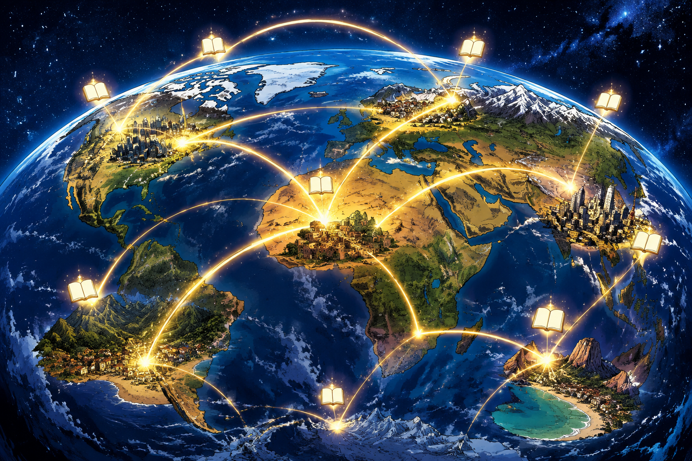
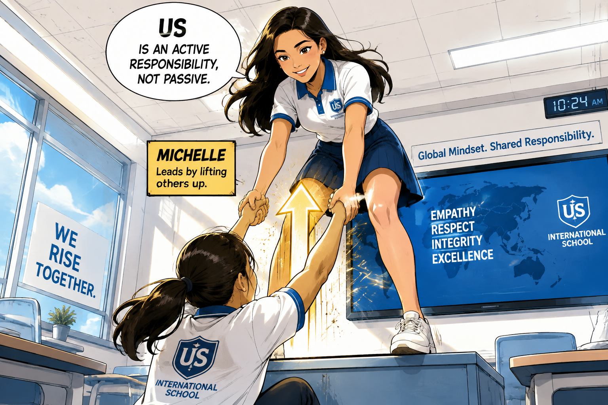
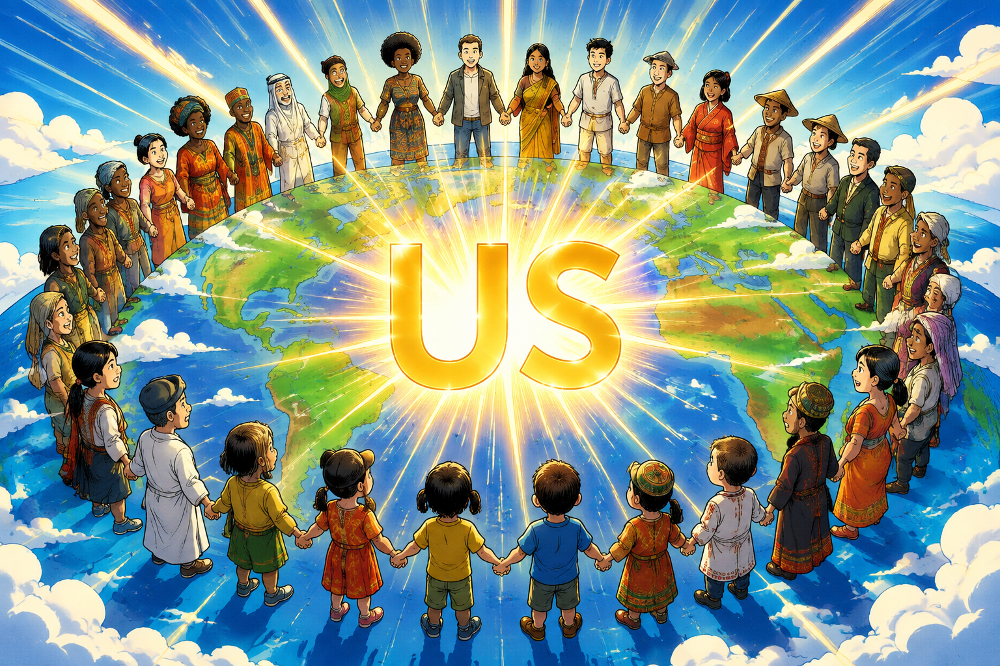

Hello everyone, my name is Michelle. I'd like to start with a single question: what is the most important factor to our world's development? Is that technology? Abundant resources?
什么最重要？科技？资源？

2 答案
✨ 巨大的发光 "US"
各色人种围成圈，US 在中心发光
My answer is us — human beings ourselves.
答案是我们自己。

3 经历
🌱 烈日下种树盖房
汗水飞溅 + 充实微笑 + 发光的心
During an exchange program in Tanzania, we volunteered… grow plants, build farms, even construct houses. Every day was exhausting, yet deeply fulfilling.
在坦桑尼亚两周志愿劳动，累却充实。

4 细节
📖 邻居教读书、大孩子带小孩子
每个人头上发光的灯泡 = 学习
…witnessing the community's incredible spirit toward learning and education. Neighbors regularly volunteered to teach children to read; older students helped younger ones.
社区对学习和教育的精神令人惊叹。

5 反差
🌱 破旧教室里一颗发光的种子
匮乏包围，但中心有顽强的光
…what struck me most was not scarcity, but resilience: the quiet, ordinary effort of ordinary people keeping something meaningful alive.
震撼我的不是匮乏，而是韧性。

6 升华
🌍 光芒跨越国界连成地球
知识的光连接世界各地
The educational gap between regions is vast and may persist. Yet our yearning for knowledge is universal. It transcends borders and environment.
地区差距巨大，但对知识的渴望是普遍的。

7 行动
🤝 现代教室里伸手把人托起
向上箭头 = 主动托举彼此
Today I study at an international school… But gratitude alone isn't enough. "Us" is not a passive answer. It's an active responsibility.
"我们"不是被动答案，是主动责任。

8 点题
🌍🤝 众人手拉手围成地球，US 在中心发光
宏大收尾，回扣开场
…the resilience I witnessed isn't unique to that village. It lives in every community… we become the very force that drives it. That is why, for the development of our world, the most important thing will always be us.